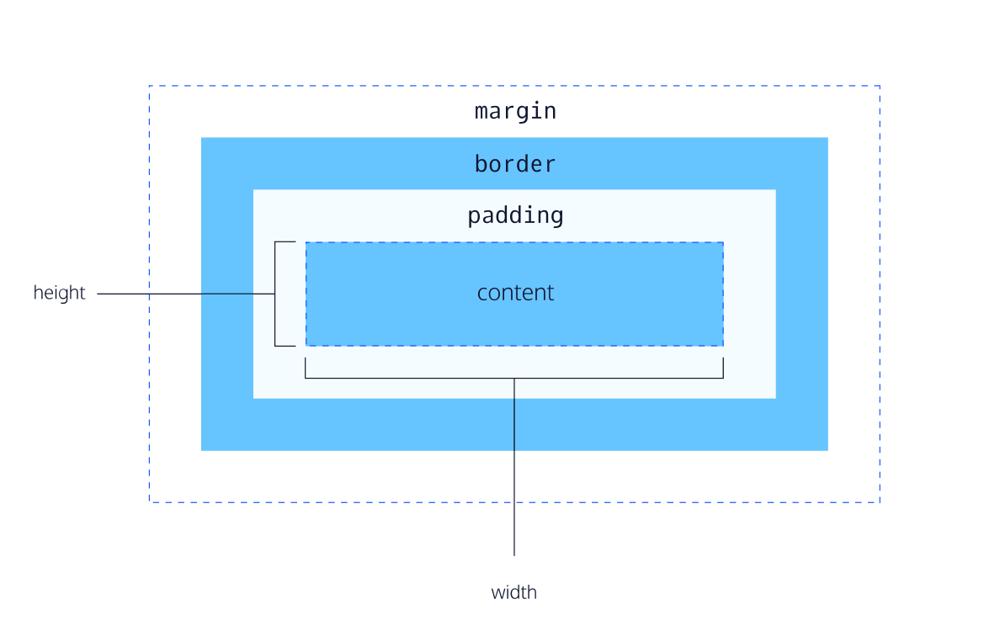

Web browsers have a default stylesheet they use if one isn't provided. This stylesheet is known as the user agent stylesheet. User agent stylesheets often set default values for padding and margin, which can make it difficult to style a web page. Many devlopers reset these values to zero to work from a blank slate. This can be done in the main stylesheet or in another stylesheet called reset.css
| selector type | css format | notes |
|---|---|---|
| type | opening tag | |
| universal | * | Useful for resetting default bowser settings or selecting all children of parent elements. |
| class | .class_name | HTML elements can have multiple classes (separated by commas). Selects all elements with the specified class. Classes are meant to be reused |
| ID | #id_name | HTML elements can only have 1 id and each id can only be used once per page. Overrides class styling |
| attribute | [attribute_name] | Can get more specific type[attribute* = value] selects elements with attribute containing value |
| pseudo-class | selector:pseudo-class | Pseudo-classes are used to define a special state of an element ex focus, visited, disabled, active. |
Combining multiple selectors for specificity
Selects elements nexted within other HTML elements
ex .main-list li selects li elements nested in the main-list class
Multiple selectors can be used for the same declaration. Selectors are separated with commas.
The CSS box model is essentially a box that wraps around every HTML element. It consists of: margins, borders, padding, and the actual content.
A line surrounding an element. Has width, style, and color.
Defaults to medium, none, color where color is current color of the element.
All three values are set in one line of code.
property - border:
border radius - a property that rounds the corners of the border. To make a cirular border set the element to have the same width and height and set border-radius to 50%
The space between contents of box and borders of box.
Properties - padding:, padding-top:, padding-right:, padding-bottom:, padding-left:
Different values for padding properties can be set in one line of code
selector {padding: top right bottom left; }
selector {padding: top left&right bottom; }
selector {padding: top&bottom left&right; }
The space directly outside the box.
Properties - margin:, margin-top:, margin-right:, margin-bottom:, margin-left:
Different values for margin properties can be set in one line of code, like padding
selector {margin: top right bottom left; }
selector {margin: top left&right bottom; }
selector {margin: top&bottom left&right; }
To be centered, an element must have a width
Uses property value auto for left and right margin
selector {margin: 0 auto;}
Limits how narrow/wide or tall an element can be when browser size is adjusted.
Setting the minimum and maximum width or height can cause content of the element to overflow its box.
Properties - min-width:, max-width:, min-height:, max-height:
Controls what happens to content that spills outside its box.
Property - overflow:
common values
Set on parent element for rendering children elements
Property that can hide element from view.
Property - visability:
Values
The box model adds the width of element, border, and padding together to figure out box size. This can cause problems when nesting boxes. The new box model changes how width and height is calculated. It increases predictability. Content size is adjusted to accomadate padding and border.
selector {box-sizing: border-box;}
Position - a property that can take on one of five values:
| value | descrption |
|---|---|
| static | the default value |
| relative | value that allows you to position an element relative to its default, static position. other content will not be adjusted to fit into any gap left by element. requires one or more offset properties top, bottom, left, or right |
| absolute | positions element relative to nearest non-static element. all other elements will ignore the element and act as if it isnt there. can take offest property declarations. removes elemetn from normal flow of document. |
| fixed | fixes element to a specific position on page. location determined by offset properties. removes element from normal flow of document. |
| sticky | keeps element in document flow as user scrolls but sticks to a specific postion set by offset properties. |
z-index - a property that sets how far back or forward an element should appear. set to an integer value.
All HTML elements have a default dispaly value that dictates if it can share horizontal space with other elements. This default can be overridden with the display property
| value | description | default for |
|---|---|---|
| inline | elements have a box that wraps tightly around their content, only taking up the space required for their content. don't require a new line after elements. cannot be altered in size with height and width. | <em> <strong> <a> |
| block | elements that aren't displayed in the same line as the content around them. default to the width of the entire page but can be modified. default height to accomodate contents. height can also be modified | headings <p> <div> <footer> |
| inline-block | elements that can appear next to eachother. dimensions specified by width and height | images |
float - a property that moves an element as far left or right as possible. can be set to the value left or right. element must have a specified width to use this property
clear - a property that specifies how elements should behave when they bump into eachother on the page. can be set to left, right, both, or none.
left - the left side of the element will not touch any other element within the same containing element
right - the right side of the element will not touch any other element within the same containing element
both - neither side of the element will touch any other element within the same containing element
none - the element can touch on either side